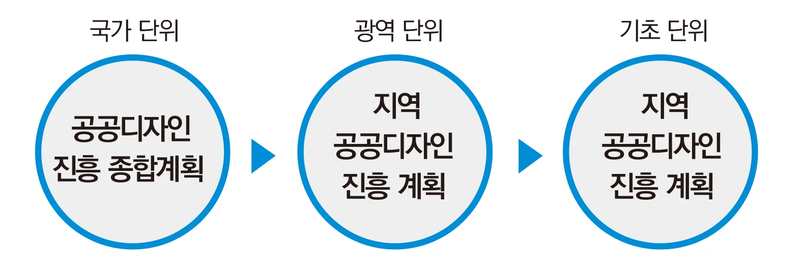
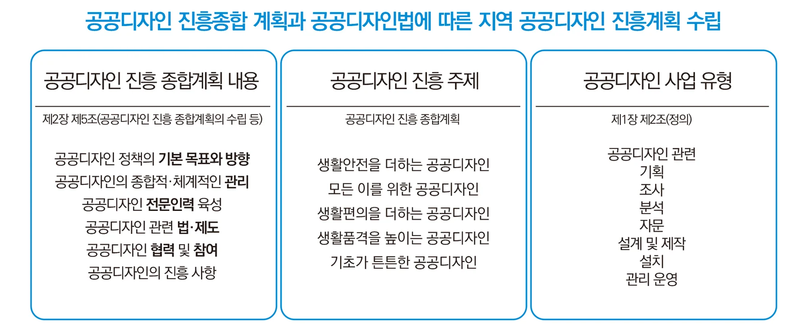
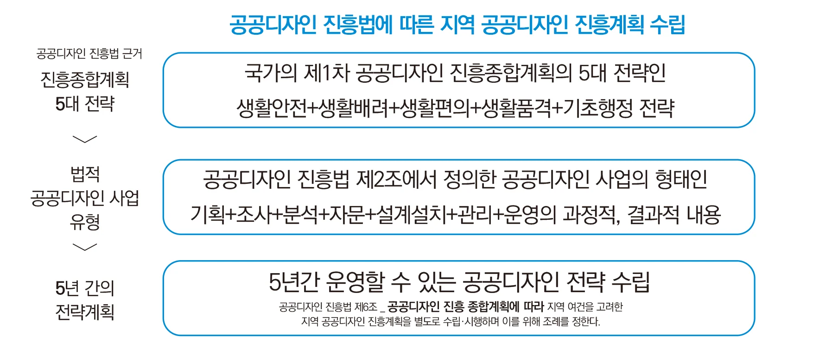
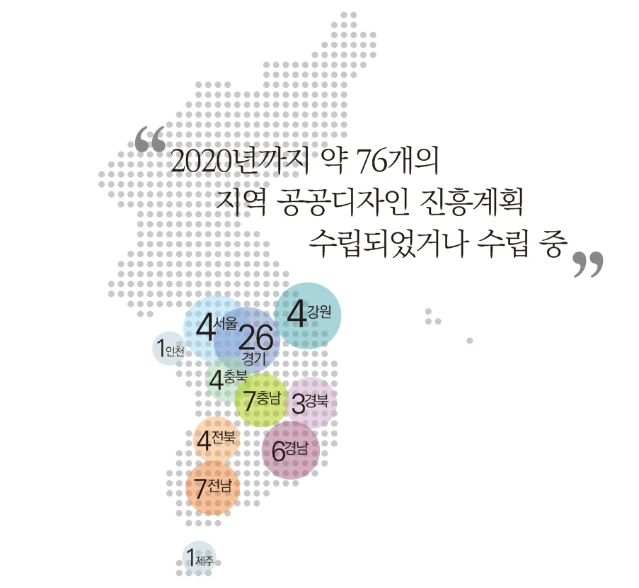

공공디자인 진흥의 실천 — 지역 공공디자인 진흥계획
[공공디자인 뉴스 특집 기사 2]
“지역 공공디자인 진흥 계획 알아보기”
공공디자인의 진흥에 관한 법률 제6조 1항
“지자체장은 종합계획에 따라 지역 여건을 고려한
지역 공공디자인 진흥계획을 별도로 수립ㆍ시행하여야 한다.”
실질적인 지역의 공공디자인 법적 수단
“....이제 공공디자인도 법적인 계획의 위상을 갖게 되었습니다....”
공공디자인 진흥에 관한 법률(이하 공공디자인법)에 따라 공공디자인 진흥계획이라는 공공디자인에 관한 법정계획을 수립할 수 있게 되었는데 이는 국토의 계획과 이용에 관한 법률 제 10조에 따른 도시계획이 도시의 기능과 효율적 관리를 위한 계획으로 역할을 하듯이 공공의 이익과 안전과 같은 공공성의 기획과 실현을 위한 공공디자인의 수단을 지니게 되었다는 점에서 의미가 있다.
국가 차원의 ‘공공디자인 진흥 종합계획’
특별시, 광역시 차원의 ‘지역 공공디자인 진흥계획’
지방자치단체 차원의 ‘지역 공공디자인 진흥계획’의 위계 구성

국가 단위의 ‘공공디자인 진흥 종합계획’은 2018년 5월 발표되었고 같은 법 제5조에 따라 약 240여개의 각 지방자치단체도 ‘지역 공공디자인 진흥계획’을 수립할 수 있게 되었다. 다른 진흥계획과 달리 공공디자인 진흥계획은 법률-시행령-시행규칙의 위계와 같이 국가-광역-지자체의 3단계의 구성을 갖는 특징이 있다. 즉, 문화체육관광부장관이 주체가 되어 국가 차원에서 수립되는 ‘공공디자인 진흥 종합계획’과 특별시, 광역시 차원의 ‘지역 공공디자인 진흥계획’ 그리고 지방자치단체 차원의 ‘지역 공공디자인 진흥계획’으로 구분된다. 지역 공공디자인 진흥계획의 광역과 지방자치단체의 기능과 관계설정은 매우 중요하고 상위 기관의 심의를 받지는 않지만 정책적 정합성과 효율적인 공공디자인 관리를 위해 연계되어 수립될 필요가 있다.
지자체의 자율성을 최대한 보장하는 지역 공공디자인 진흥계획

내용적 측면에서 살펴보면 국가의 공공디자인 진흥종합계획이 정책의 기본 목표와 제도와 협력 참여 등 실행 방법을 제시하고 있으면서 세부적인 실천 전략의 각 지자체의 상황에 맞게 수립할 수 있도록 자율성을 보장하고 있다.(공공디자인법 제6조 4항 참고)
광역의 계획은 국가차원의 큰 방향성에 맞춰 광역의 통합적 계획과 목표 제시와 함께 지자체의 행정적 제도적 사업적 지원, 협력 등과 사업주제 및 전략에 대해 계획을 수립할 수 있다. 지자체는 공공디자인 사업을 실질적으로 수행하는 주요 주체로서 국가와 광역의 공공디자인 진흥계획의 방향과 전략에 맞춰 공공디자인의 목표, 기획, 사업, 제도, 협력, 관리, 운영사항에 대한 지역의 여건을 고려하여 수립하게 된다.
앞서 살펴본 것과 같이 지역 공공디자인 진흥계획은 국가 차원의 공공디자인 진흥종합계획을 계승하여 지자체 여건에 맞게 수립하는 5년 단위 법정 계획이다. 지역 공공디자인 진흥계획에서 유의할 점은 공공디자인법 제정이전 조례에 근거하였던 권역계획과 가이드라인 수립위주의 공공디자인 기본계획의 틀을 탈피하는 것이다. 기존 공공디자인 기본계획들은 경관계획과의 중첩 및 시설물에 국한된 가이드라인의 한계 등 정체성과 역할의 과도기적 성격을 가지고 있기 때문에 국가가 정립한 공공디자인 진흥종합계획의 비전과 목표, 실행 방안 등 기본 기조 등을 반영하여 지역 공공디자인 진흥계획을 수립할 필요가 있다. 국가의 공공디자인 진흥종합계획은 법 5조에 의해 포함사항이 규정된 반면 지역 공공디자인 진흥계획의 규정사항이나 포함사항을 담은 지침은 없고 조례를 통해 세부사항을 정하게 한 것은 디자인과 진흥계획이라는 특성에 맞게 자율적이고 독창적인 계획을 수립할 수 있는 조건이기도 하다.
* 공공디자인 진흥종합계획수립 포함사항 (공공디자인법 제5조)
1. 공공디자인 정책의 기본 목표와 방향에 관한 사항
2. 공공디자인의 종합적·체계적인 관리에 관한 사항
3. 공공디자인 전문인력 육성에 관한 사항
4. 공공디자인 관련 법·제도에 관한 사항
5. 공공디자인 진흥을 위한 관련 분야와의 협력 및 국민 참여에 관한 사항
6. 그 밖에 공공디자인의 진흥에 관한 중요 사항
공공디자인법과 공공디자인 진흥종합계획을 준수하는 지역 계획

지역 공공디자인 진흥계획의 수립에 있어 참고해야 할 부분은 제2조에서의 공공디자인 사업 정의와 제10조의 공공디자인 사업 시행 원칙 부분 그리고 공공디자인 진흥종합계획의 5대 전략 19개 과제이다.
첫째로 제2조 2항에서는 "공공디자인사업"이란 공공디자인을 구현하는 과정에서 공공디자인 관련 기획ㆍ조사ㆍ분석ㆍ자문ㆍ설계 및 제작ㆍ설치ㆍ관리 등으로 규정해 놓았다. 이는 지역 공공디자인 진흥계획이 단순히 ‘설계, 제작, 설치’의 물리적 시설 또는 공사 외에 예를 들어 공공디자인 주제의 기획, 지역문제 찾는 디자인 거버넌스 사업, 공공디자인 닥터 등의 자문사업, 공공디자인 사업의 효과를 검증하는 모니터링 또는 실증사업, 행정 제도 개선 사업 등 공공디자인을 구현하는 전주기에 걸친 과정에 대해 사업을 수립할 수 있다는 것이다. 이는 공공디자인 사업의 실현성과 구체성을 더욱 높이고 지자체 거의 모든 부서에서 자체 사업에 공공성을 향상 시킬 수 있는 수단으로서의 잠재력을 지니고 있는 부분이다.
둘째 제10조는 공공디자인 사업 시행의 기본원칙을 제시하고 있는데 이는 지역 공공디자인 진흥계획이 수립해야 할 공공디자인 사업의 지향점을 보여주고 있다.
* 공공디자인사업 시행의 원칙
1. 공공의 이익과 안전을 최우선으로 고려하며, 아름답고 쾌적한 환경을 조성하도록 한다.
2. 연령, 성별, 장애 여부, 국적 등에 관계없이 모든 사람들이 안전하고 쾌적하게 환경을 이용할 수 있는 디자인을 지향한다.
3. 국가ㆍ지역의 역사 및 정체성을 표현하고, 주변 환경과 조화ㆍ균형을 이루도록 한다.
4. 공공디자인에 관한 국민들의 의견을 적극적으로 수렴하며, 의사결정 과정에 국민들이 참여할 수 있는 다양한 방안을 마련한다.
5. 공공시설물등을 관할하는 관계 기관과 적극적 협력체계를 통하여 통합적 관점의 공공디자인이 구현될 수 있도록 한다.
위와 같은 공공디자인 사업 시행 원칙적용을 통해 지역 공공디자인 진흥계획은 그간 경관 차원의 물리적 계획 중심에서 공공의 안전과 이익을 중심으로 하는 가치 지향적인 사업으로 발전해 나가고 있다.
셋째는 공공디자인 진흥종합계획의 5대 전략 19개 과제의 계승이다.
생활 안전, 모든 이를 위한 배려, 생활 편의, 생활품격, 기초 마련 등과 같은 5대 전략은 우리나라의 공공디자인이 정책적 비전과 인본주의적인 가치를 목적으로 하는 방향성을 명확히 설정하였다는데 의미가 있다. 기존 공공디자인법에서 ‘공공의 이익과 안전’이라는 공공성의 규정을 공공디자인 진흥종합계획에서 업그레이드 한 것이다. 이를 통해 공공디자인 사업은 물리적 장소, 시설 등 유형사업에서 안전, 배려, 편의 등 가치 중심의 주제사업으로 확장되게 되었다. 따라서 지역 공공디자인 진흥계획에서는 이러한 목표와 비잔, 전략을 계승하여 지역에서의 세부실천방안으로 마련하여 실행해야 한다.
* 공공디자인 진흥종합계획 주요 전략
1. 생활안전을 더하는 공공디자인
범죄예방/재난예방/안전
폭력, 범죄, 재난, 사고를 예방하고 안전을 고려한 공공디자인
2. 모든 이를 위한 공공디자인
범용(유니버설)/보건‧복지
남녀노소 및 사회적 약자가 구애받지 않는 보편적 디자인 해결방안 제시 및 사회복지‧사회보장‧공중위생 등의 향상에 기여하는 공공디자인
3. 생활편의를 더하는 공공디자인
공공공간/공공시설/공공용품
누구나 불편 없이 생활할 수 있는 안내체계 등 공공공간‧공공시설물‧공공용품 디자인
4. 생활품격을 높이는 공공디자인
지역정체성/ 공동체 의사소통/생활 SOC/생활 SOC/기타
지역정체성 및 공동체 의사소통 향상, 친환경적 해결책 제시, 사회적 책임 향상 등
더 나은 삶을 위한 공공디자인
5. 기초가 튼튼한 공공디자인
인력양성/R&D/기반조성/기타
공공디자인의 전문성‧발전가능성‧혁신성 등 R&D 강화 및 공공디자인 진흥에 기여하는 연구
지역 공공디자인 진흥 계획의 실천
2020년 상반기까지 전국에서 약 70여군에서 지역 공공디자인 진흥계획이 수립되었거나 수립 중에 있다. (공공디자인 기본계획이나 도시디자인 기본계획으로 발주된 후 공공디자인 진흥계획으로 수립되는 경우는 제외) 공공디자인법 이전의 조례기반의 공공디자인 기본계획과 차별성을 갖는 것이 매우 중요한데 아직 많은 지역계획에서 차별성 없는 계획으로 수립되는 경우를 볼 수 있다. 따라서 지역 공공디자인 진흥계획의 과업 목적과 내용을 명확화하고 상위 국가 계획 및 광역 계획과의 연계성 그리고 지자체의 상황에 맞고 필요한 과업을 설정하는 것이 중요하다. 그리고 공공디자인법에서 규정한 공공디자인사업의 전주기에 걸친 기회-조사-분석-설계-설치-관리 등의 과정에 해당하는 다양한 사업 방법을 마련하여 실천력을 강화할 필요가 있다. 또한 실질적으로 지자체에서 실천력을 강화하기 위해서는 부서관 통합된 계획으로서의 활용이다. 지금까지의 공공디자인과 유관 계획은 수립 부서에서만 활용되는 것이 현실이었다. 공공디자인의 주제들이 사실 전 부서의 정책과 관련되고 국민들의 실제 생활에서 체험하는 주제들이기 때문에 통합적으로 활용될 때 계획의 가치가 향상된다.
지자체의 1년 사업계획을 마련할 때 공공영역에서의 대부분 사업들은 공공의 안전, 편리, 배려 등과 같은 공공성을 향상시키는 것이 매우 중요한데 공공디자인 진흥계획에서 마련된 주제들을 통해 공공성의 지수를 올릴 수 있다. 각 사업의 주제별 검토를 통해 생활안전, 생활편의, 배려, 생활품격 등의 상세 주제들과 연계하여 부가하면 실행사업들이 공공성 가치가 향상되어 공공디자인사업으로 실행되고 관리될 수 있다. 그리고 각 사업들을 지원하기 위해 사업실천 전후 단계의 기획, 조사, 분석 및 실증, 제도, 관리 등에 대한 내용들도 공공디자인 사업으로 운영될 수 있다. 결국 부서별 통합적으로 활용될 수 있는 실천방안의 마련과 이러한 통합적 관리를 법정계획인 지역 공공디자인 진흥계획에 담아서 5년 동안 체계적으로 실행하고 더 나아가 공공디자인 진흥조례를 통해 관리하는 것도 중요하다.

공공디자인 진흥계획이라는 생소한 계획이 그 모습을 나타낸지 아직 2년이 되지 못했다. 그러다보니 많은 이들이 계획의 방향성과 실행 방법에 대해 어려워하고 거리감을 두고 있는 것도 사실이다. 공공디자인의 짧은 역사 속에서 공공디자인의 근거법을 만들고 법정 계획의 틀을 만드는 등 과정을 거치면서 많은 국민 그리고 행정가들과 이해와 공감을 지속적으로 얻고 오지 못한 것도 사실이지만 진흥계획은 새로운 시대정신을 담아내 실현할 수 있는 매우 중요한 기회이다. 지금도 많은 이들의 노력으로 현재 진행형인 지역 공공디자인 진흥계획이 공공의 이익, 복지, 사회문제해결 등 새로운 시대정신을 담아내 우리 공간과 환경 그리고 사용자인 국민들을 위해 담아낼 새로운 계획으로서 자리매김 하길 바란다.